EXPEDITON TO SIBERUT – the mysterious island of medicine men
THE UNIQUE CHANCE TO JOIN THE REAL MEDICAL CEREMONY!
LOW PRICE – DON'T MISS YOUR CHANCE, IT WON'T REPEAT!
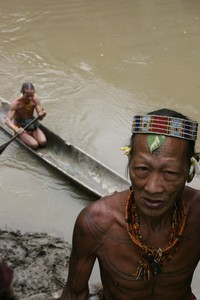
Photo©Petr Jahoda
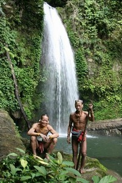
Photo©Petr Jahoda
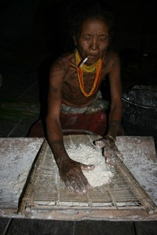
Photo©Petr Jahoda
The expedition goes to the heart of the mysterious island of medicine men. Their houses are decorated by monkey skulls and other animal bones. You will see a real medical ceremony, because I go there to get the re-treatment for my old illness. They helped me there once already, however after many years some symptoms show up again. It is a unique chance to see the real medicine men in action. The first treatment was a very strong experience not only for me, but also for my friends. Nobody dared to take pictures even they could. Now there is a chance for you to experience something special. No reason to be scared, there is just white magic on Siberut. Parents of the child, who want to become a medicine man, must guarantee that the son will only work with the white magic.
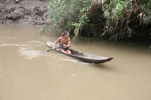
Photo©Petr Jahoda
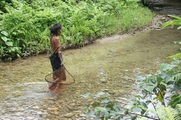
Photo©Petr Jahoda
THE PRICE IS EXTREMELY LOW due to the fact that I go there for the treatment as well as this trip follows after another expedition. My group will go to Papua to the Tree people – Kombai tribe and after that we continue to Siberut.
TERM 2014
Such expedition won't be repeated!
Please go to www.JahodaPetr.cz/…ce-2004.html for pictures or articles.
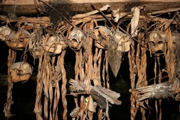
Photo©Petr Jahoda
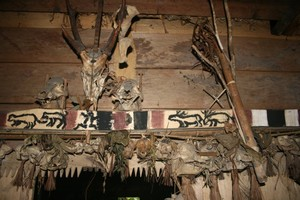
Photo©Petr Jahoda
*SIBERUT** is a small island in Indian Ocean to the west of Sumatra, it belongs to Indonesia. It is interesting especially for the life of the native people – MENTAWAI tribe. They keep their old way of living. Their main food is SAGO. From the palm leaves they create roofs for their houses, women skirts, loincloths. SAGO WORMS is a welcome change of their menu. They eat fish, mollusk, mussels, insect or caterpillars. Sometimes they eat coconuts or a monkey, if they are lucky. They use bows, poisoned arrows and spears. They breed poultry and small pigs – their most favorite delicacy. Mentawai people keep their old customs, they use tattoo to decorate their bodies, sharpen their teeth and use the monkey skulls to decorate their houses. They live in a tropical rain forest, where you can find beautiful tropical pitcher plants. The member of this expedition must be ready to bear the hardships of the long hard walking in the jungle. The level of difficulty is medium in this case. It rains daily in Siberut. The rain usually starts between 2–6pm and lasts till the morning. The average temperature during a day is between 28–35 degrees of Celsius, 22–27 degrees of Celsius at night. We will sleep in the tents, but on the roof terraces of the big Mentawai houses called Uma.
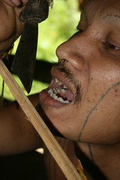
Photo©Petr Jahoda
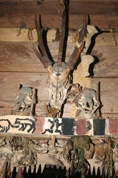
Photo©Petr Jahoda
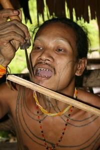
Photo©Petr Jahoda
PLAN OF THE EXPEDITION – 14–17 days
1st-2nd day – flight to Jakarta
3rd day – flight to Padang, then we continue by the wooden boat to Siberut. We might have to wait 1–2 days for its departure. I'll do my best so we can leave asap, however in case we must wait there for the boat, there is a lot of interesting things to see: BUKITTINGGI and its nice Canyon Harau Valey – it is possible to swim there under the falls. Padanpanjang with the original houses of MINANGKABAU people. MANINJAU lake and hot springs ALAMADA.
4th – 13th day – SIBERUT EXPEDITION. We'll be sailing on a small boat to the native people. We'll try to get as far as possible into the heart of this island and see as much as we can. You'll have an unforgettable experience from the jungle, you will see the sago production, bow and arrows creation, you might see the mussels fishing or wild animal hunting. Last night we will sail back to Sumatra.
14th – 15th day – flight to Jakarta and flight home.
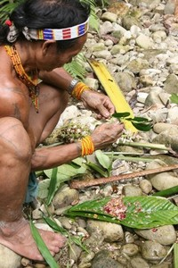
Photo©Petr Jahoda
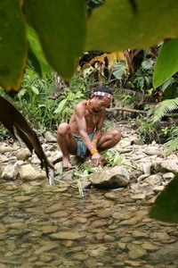
Photo©Petr Jahoda
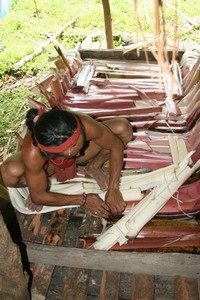
Photo©Petr Jahoda
Price: on request.
What is included in the price: Professional guide, accommodation (sleeping in the tent or in a hut of native people during the expedition, otherwise in hostels or little hotels of medium standard), the local transport – bus, mototaxi, cyklotaxi (if needed), ferryboat Padang – Siberut – Padang, 1× boat on Siberut, permit on Siberut, info materials.
What is not included in the price: Return flight to Jakarta, return flight Jakarta – Padang paorox.USD 200 – 300, airport tax, food aprox. USD 100, bearer aprox USD 50.
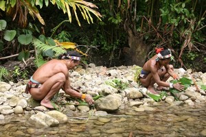
Photo©Petr Jahoda
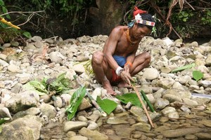
Photo©Petr Jahoda
OPTIONAL CHOICES:
Flores and Komodo islands: Part of the group will continue from Siberut to Flores island. We'll see the Keli Mutu volcano with colored lakes. Then we'll go to Komodo island to see the monitors. We can get some sun-tan on Bali at the end.
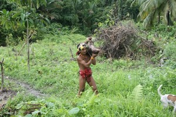
Photo©Petr Jahoda
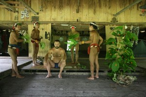
Photo©Petr Jahoda
Volcano Kerinchi: It's on Sumatra, not far from Padang. We need 2 days to get on the top + 2 days transport there and back. There is NP Danau Tuju close by, nice park with the forest, 7 lakes on the top. There is a possibility to ride an elephant there. After the return we recommend to take a bath in the hot springs. Bukit Lawang – orangutans: Going across the lake Toba, visiting the local people with cannibal history and then continue to orangutan sanatorium close by Medan. It is possible to take flight directly to Jakarta from here. This trip takes about a week.
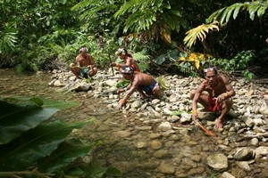
Photo©Petr Jahoda
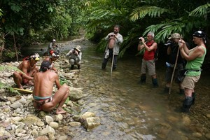
Photo©Petr Jahoda
Bukittingy, Harau Valey, etc: Padang and its surroundings is very interesting place. We?ve already mentioned something about this in the Siberut plan above, however there is much more to see. This program can take a week.
Free Calendars 2015 for You
All the snaps in these three calendars were taken during two weeks of a standard expedition by one of our clients, Jerry Forejtek, a non-professional photographer.
Předchozí stránka: Home
Následující stránka: Expeditions